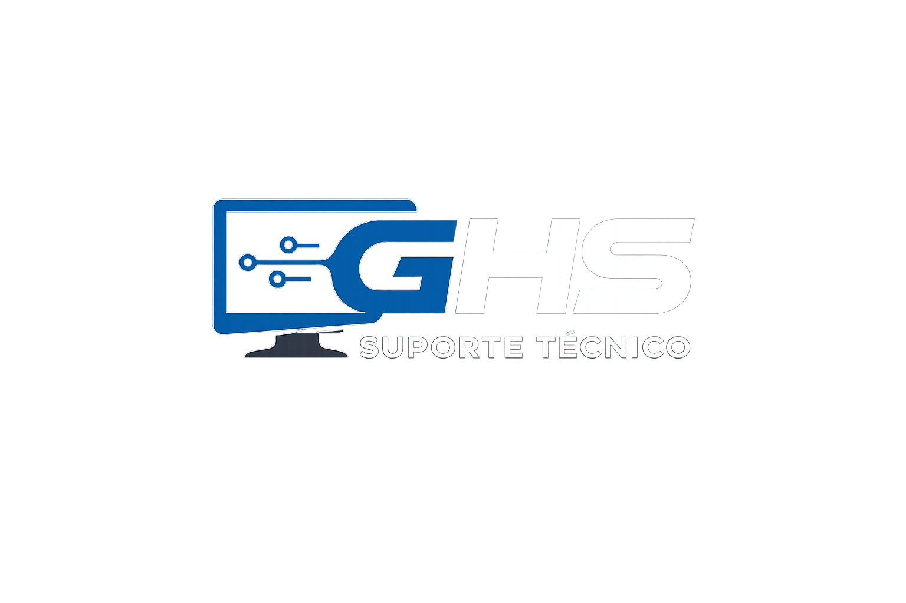
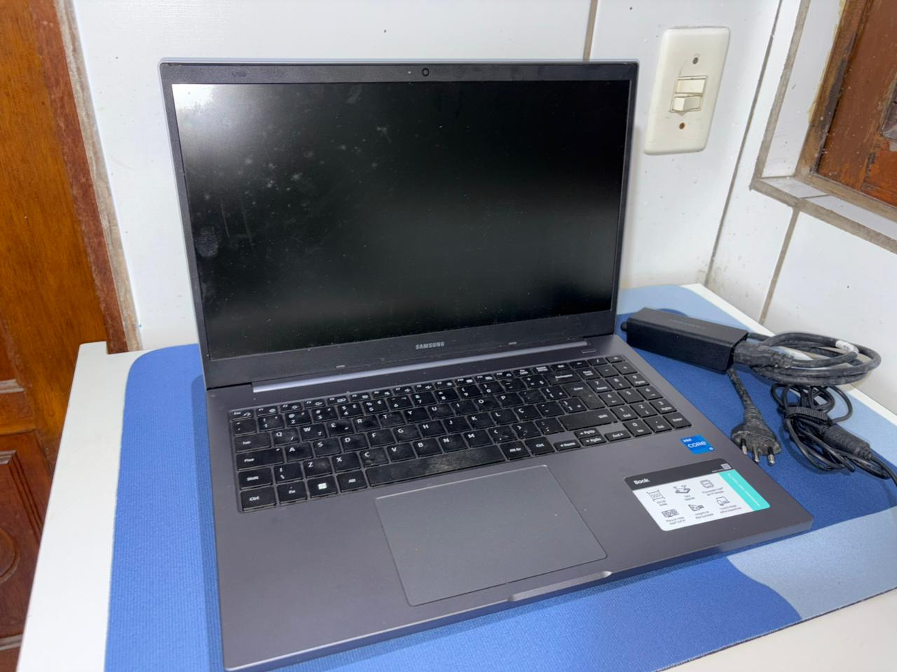

Manutenção, troca de teclado, troca de tela, limpeza interna, formatação, otimização e suporte técnico com cuidado e qualidade.
Serviços pensados para deixar seu equipamento mais limpo, rápido, seguro e confiável.
Revisão completa do seu computador ou notebook, troca de peças, testes e diagnóstico.
Remoção de poeira, sujeira e manutenção preventiva para melhorar a vida útil do equipamento.
Ajustes para deixar o sistema mais leve, rápido e melhor para o uso diário.
Instalação de sistema, programas básicos, drivers e configurações iniciais.
Veja alguns registros de manutenção, limpeza e finalização de equipamentos.

Equipamento recebido para avaliação e manutenção.
“Serviço excelente! Meu notebook voltou funcionando perfeitamente.”
Tire suas principais dúvidas antes de solicitar manutenção ou orçamento.
Você entra em contato pelo WhatsApp, explica o problema e, se possível, envia fotos ou vídeos para avaliação inicial.
Sim. Todo equipamento passa por testes após a manutenção para verificar desempenho e funcionamento correto.
Sim. A limpeza ajuda na refrigeração, evita superaquecimento e melhora a conservação do equipamento.
Sim. Faço troca de teclado, tela e outros componentes dependendo do modelo do notebook.
O prazo depende do tipo de manutenção, disponibilidade de peças e complexidade do problema encontrado.
Chame agora no WhatsApp e solicite um orçamento. Explique o problema do equipamento e envie fotos se precisar.
Falar no WhatsApp